Projects
Some of my Projects!!!
Quadcopter(Carbon Fibre Build)
This was the first project in the area of aerial robotics. This project was made in March 2018.
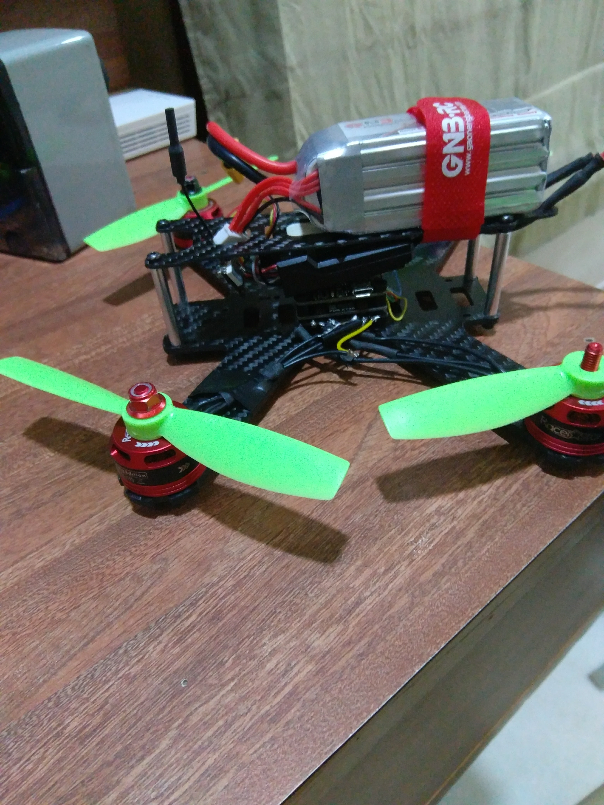
The pin diagram and connections are quite basic and there are many resources available online.
Here are the links to the components used :
F3 Flight Controller 4*20A Optical ESCs 14.8V Li-Po 1500mAh
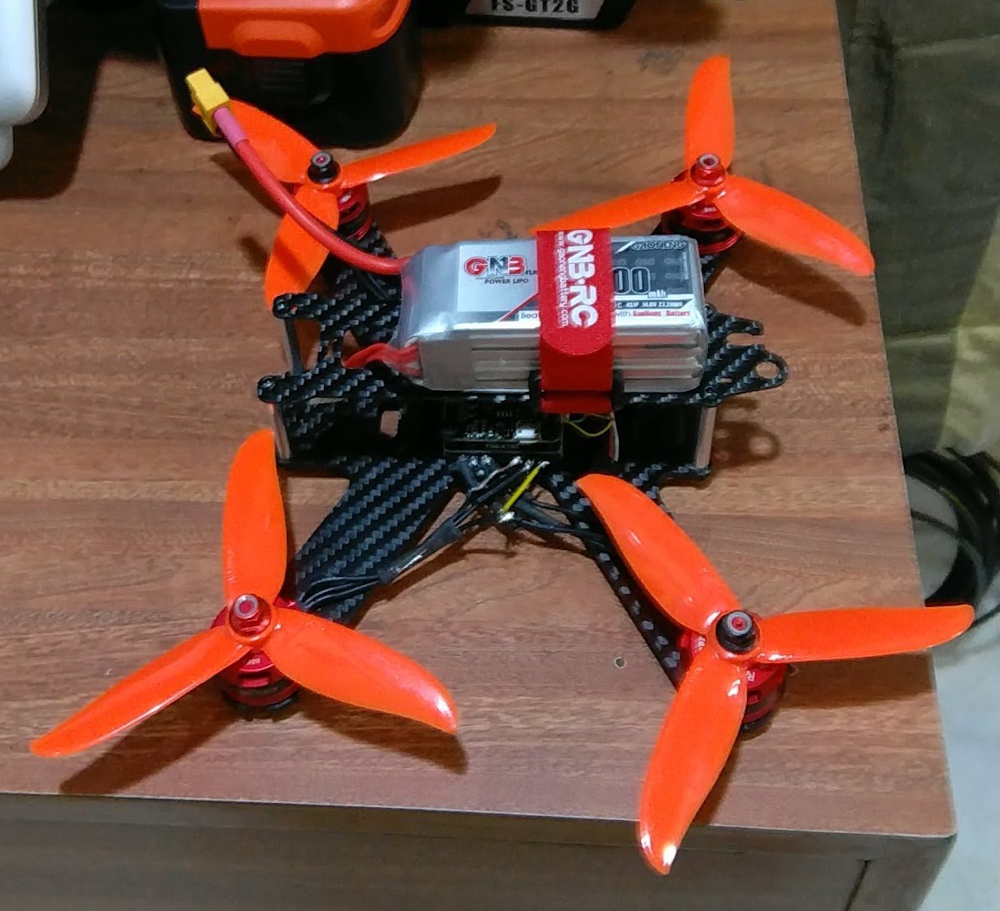
NOW LET'S COME TO CONFIGURING YOUR DRONE!
Caution: Always disconnect the battery while configuring your drone.
To configure there are many softwares, but the BetaFlight-Configurator is quite simple and very user friendly. It is available as a Google Chrome extension also.
Electric Pennyboard
This project was one of the largest investments in terms of money in addition to time and effort. It was made in July 2017. While executing this project, it would be beneficial to have certain services like welding available. Let us get into the details right away!
Here are the links to all the components used :
Voltage Tester (buzzer) Brushless Motor 270KV 180A Car ESC Banana Connectors(If Required) Penny Board Motor and Wheel Mounts
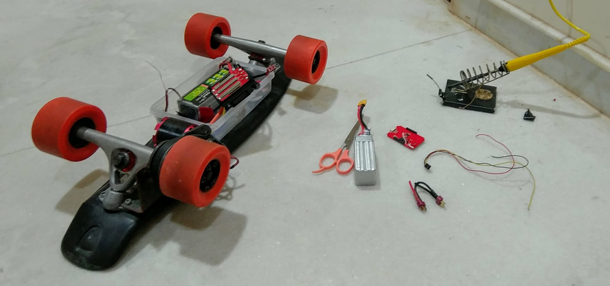
Now, with regards to the design of the Electric Skateboard here are a few pictures of the structure and how the welding was carried out. In an attempt to stabilize the motor clamp and the skateboard trucks, extra brackets were welded.
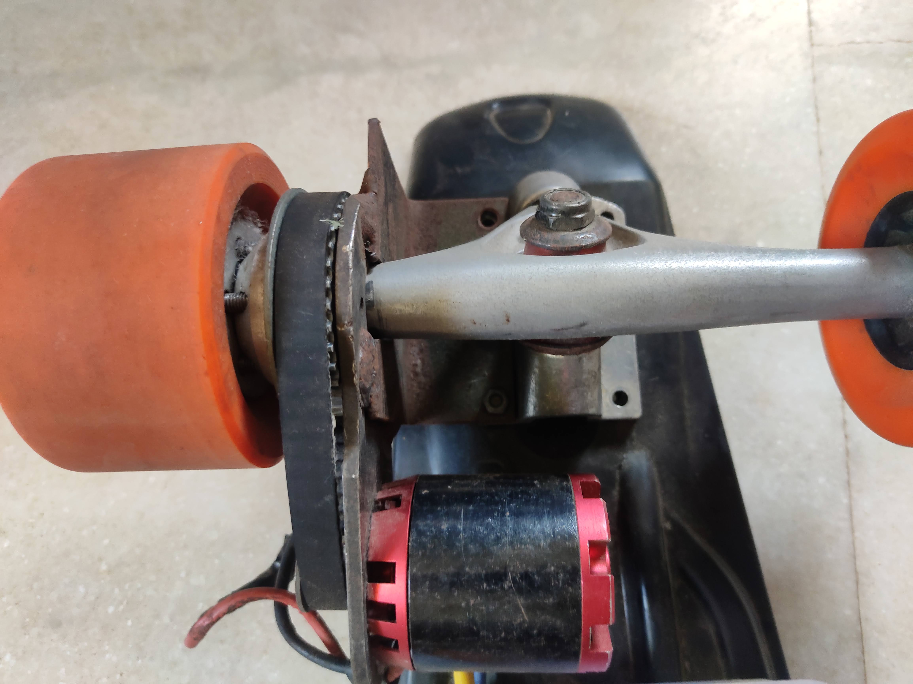
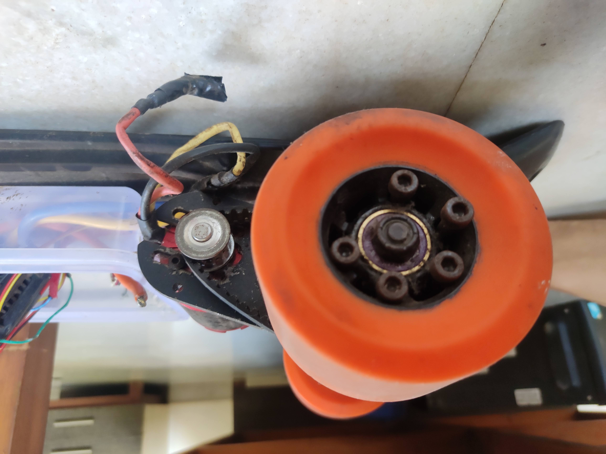
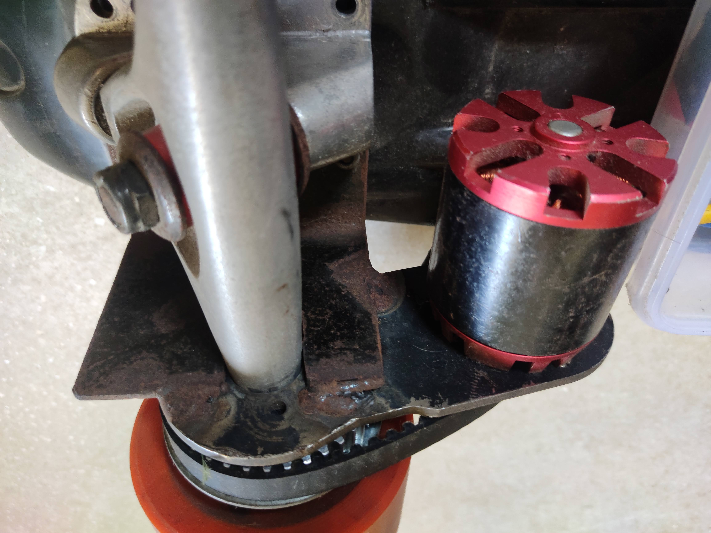
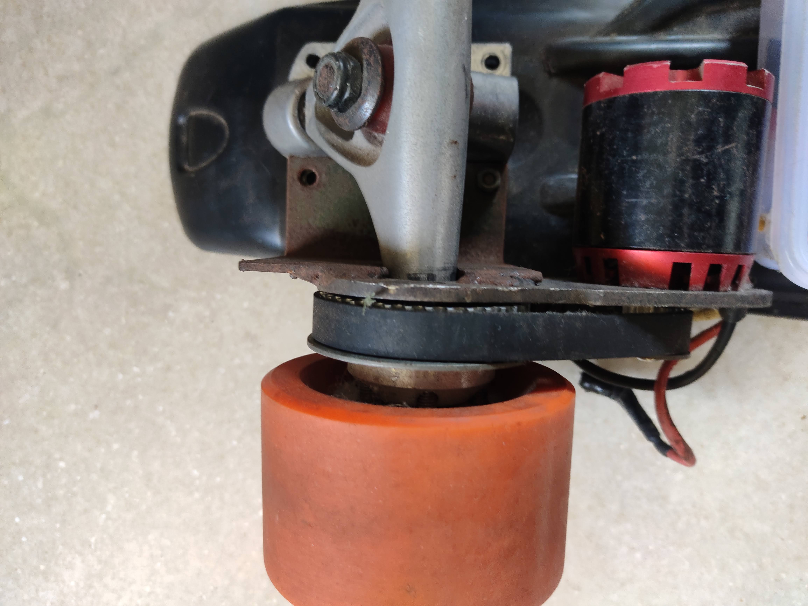
Custom Designed and Etched PCB (For Arduino Nano and Toshiba TB6612FNG Driver)
Robotics is all about improvisation to the maximum level possible. The effort involved to find the most efficient system never ends.Also note that some pictures provided below are not the final project, as before making it, a useable prototype on a veroboard was made. This Single Layered PCB would act as an add-on to the other projects, thereby minimizing their dimensions. This project was made in April 2017.
The Materials Required are:
Copper Clad Board Any Paper of Moderate Thickness A Laser Printer Hot Water
Ferric Chloride A Heat Source(Preferably a Dry Iron) A Hand Drill A Metallic Scrubber
Some Gloves and other Protective Gear
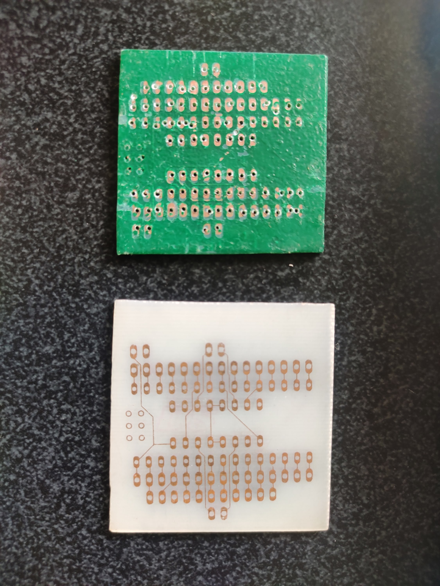
The process I followed was three-fold namely:
1. Designing the Circuit on EAGLE CAD
This is fairly simple and can be done using basic knowledge of EAGLE's tools. The circuit included the pins for Arduino Nano, TB6612FNG (motor driver). It had predefined connections for certain Analog Pins on the Arduino to the driver. You can donwload libraries for both of them online.
2. Producing the Actual PCB
There is a video which you can check out here.
3. Drilling and Soldering
After the PCB is ready, you have to take a hand drill or any automatic drill with a fine tool bit and make holes for the pins on the PCB board. Thereafter, you can place header pins or you're permanent components, and solder them directly on to the PCB.
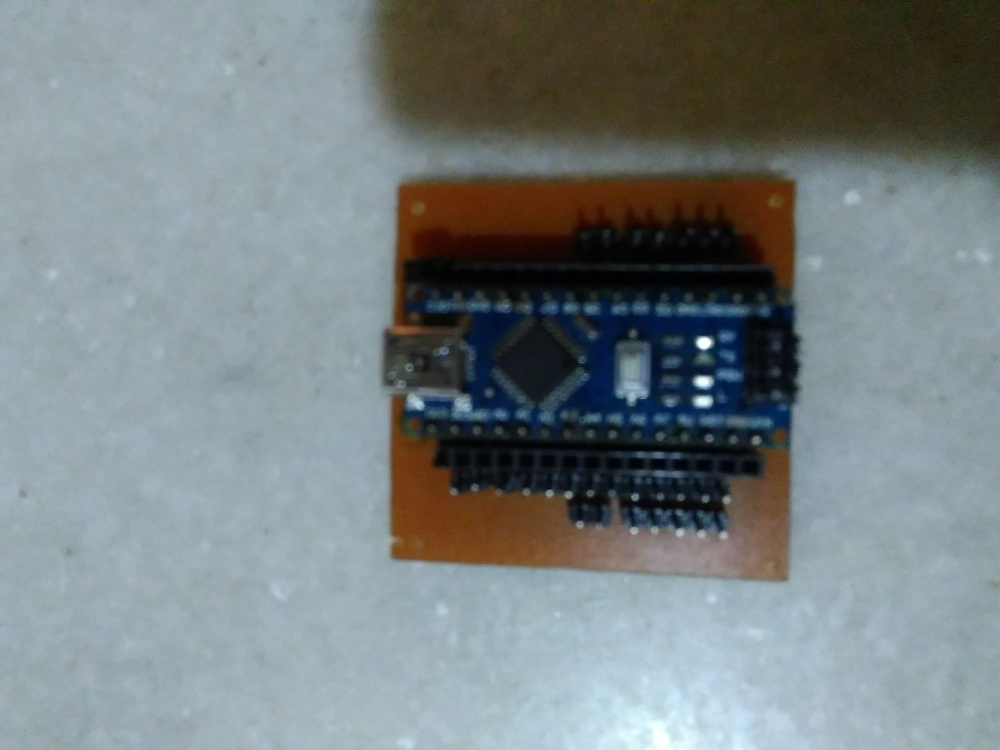
Here is what the EAGLE design looks like.

2-D Maze Solver (Using Left Hand On the Wall Algorithm and Pulse Width Modulation)
This Robot was made for SHAASTRA(IIT Madras), Asia's Second Largest inter-collegiate Techfest. It was made in December 2016.
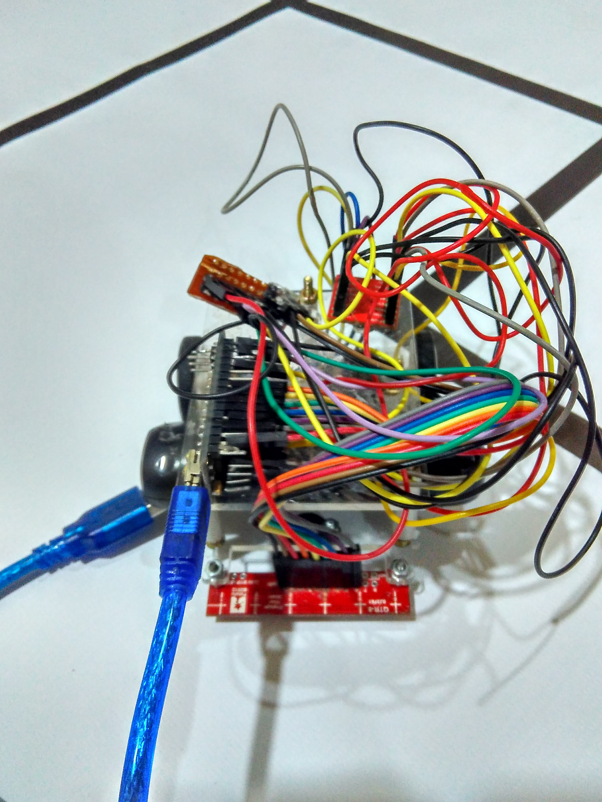
In this project the following was used:
Arduino Nano TB6612FNG motor Driver Diy PDB(power distribtion board)
Pololu 100:1 Micro Geared Motors Pololu QTR 8 Sensor Array Motor Brackets
Acrylic Chassis(Laser Cut)
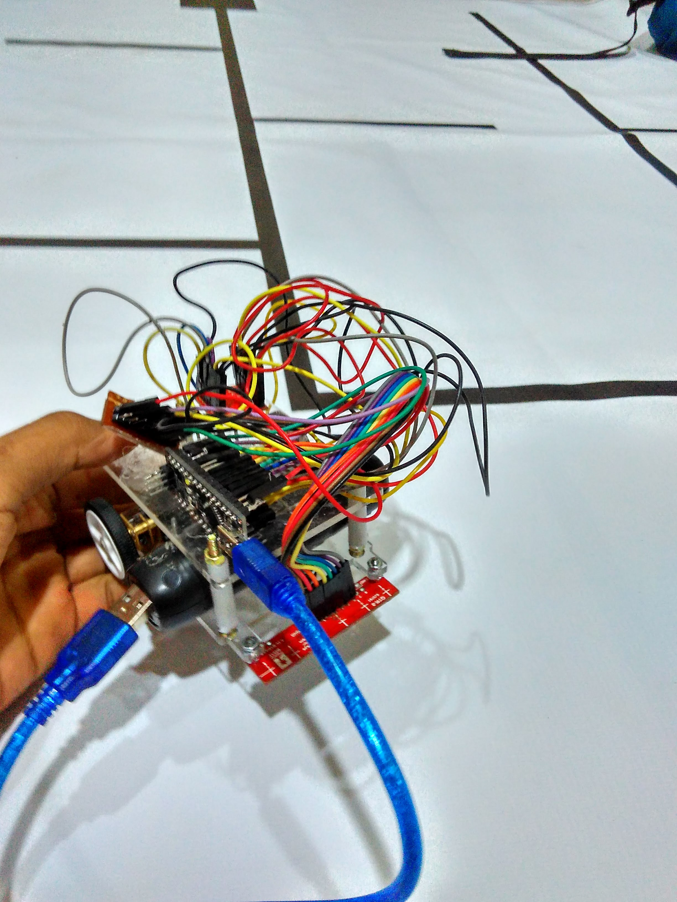
THE ALGORITHM:
The Left Hand On The Wall Algorithm is one of the most basic and straight-forward shortest path algorithms. The algorithm works by assigning a preference order: LEFT > STRAIGHT > RIGHT > BACK . It is based on the fact that in a non-looped maze if we stick to the left side of the maze at all times, then the maze will be completed.
PID Line Follower V2.0
This project was made in February 2018 in order to dive deep into the working of Pulse Width Modulation(PWM) as well as Proportional Integral Derivative(PID). Line followers, although being very basic provide deep understaning in topics like Error Handling and Optimization.
Using PID, we calculate the error (the deviation of the robot from the optimal position) as perceived by the sensors. Using a formula and inserting certain Kp,Ki,Kd values, the motor speeds are defined as a function of error and thus the robot moves in a way to minimize error.
The components of this robot are same as the above robot with the exception of the chassis(laser cut acrylic chassis), batteries and the motor.
Here are the links to them :
PID Line Follower V1.0
This Project was completed in November 2016. This Robot also uses PID and PWM similar to the above robot, however is less stable, slower, and bigger in size than it's successor mentioned above(V2.0).

The components used in this robot are the same as the ones mentioned above, except the chassis(also a Laser Printed custom chassis) and the extra IR sensor.
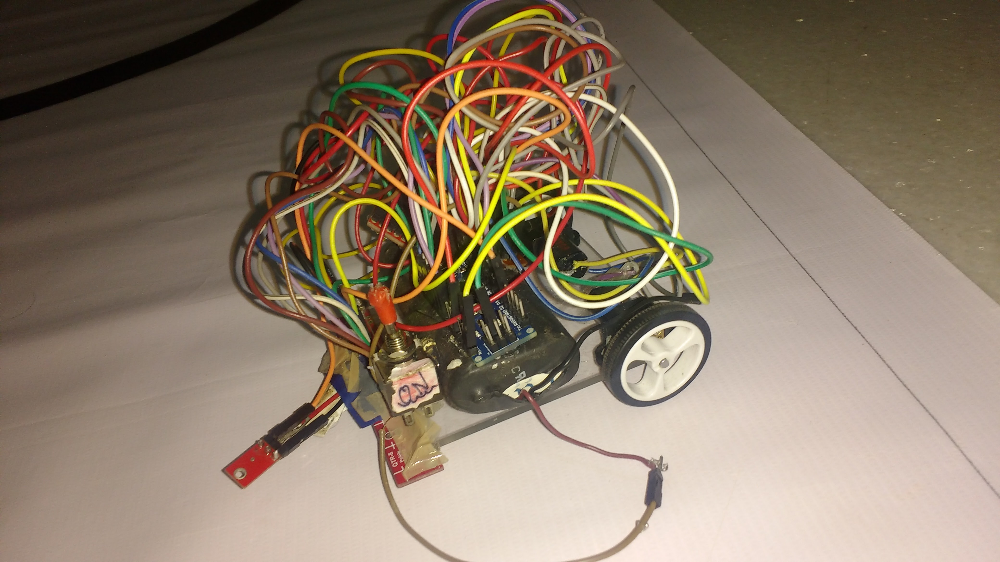